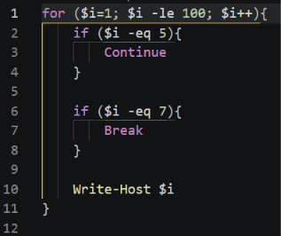

Learning objectives
After completing this guide, you can:
- install Visual Studio Code (VS Code);
- install the Microsoft PowerShell extension; and
- open a course folder and run a selection of PowerShell code.
Prerequisites
- PowerShell 7 Core installed.
- Permission to install software or extensions, if required by your institution.
Why use VS Code?
VS Code gives you one place to write, run, and debug PowerShell scripts. The Microsoft PowerShell extension highlights mistakes, suggests cmdlets and parameters as you type, and lets you run selected code in an integrated terminal. These features make it easier to experiment safely and understand what your script does.
Install VS Code
Download the recommended user installer from the official VS Code download page. The user installer does not normally require administrator permission and supports background updates.
Alternatively, install VS Code with WinGet:
winget install --id Microsoft.VisualStudioCode --exact --source winget
Restart PowerShell after the installation, then verify that the code command is available:
code --version
Install the PowerShell extension
In VS Code, open Extensions with Ctrl+Shift+X, search for PowerShell, and install the extension oi by Microsoft.
You can also install it from PowerShell:
code --install-extension ms-vscode.PowerShell
The extension provides syntax highlighting, completion suggestions, script analysis, debugging, and PowerShell terminal integration. For help, see PowerShell in VS Code.
Open your course folder
In PowerShell, move to the folder where you keep this course and run:
code .
Open or create a .ps1 file. Use the terminal profile selector in VS Code to choose PowerShell, then check that it starts PowerShell 7:
$PSVersionTable.PSVersion
Useful shortcuts
F8runs the selected PowerShell code in the integrated terminal.Ctrl+`opens or closes the integrated terminal.Ctrl+/toggles a line comment.Shift+Alt+Atoggles a block comment.
More shortcuts are available in the VS Code keyboard shortcuts reference.
Practice
Open a
.ps1file in VS Code.Add the command below, select it, and press
F8:Get-DateConfirm that the date appears in the integrated PowerShell terminal.
Run PowerShell scripts with PowerShell 7 in VS Code
Your script is currently executed using Windows PowerShell 5.1. Follow these steps to switch to PowerShell 7 (Core).
Select PowerShell 7
Open your
.ps1file in Visual Studio Code.Press
Ctrl+Shift+P.Search for:
PowerShell: Show Session MenuSelect one of the following options:
PowerShell 7 (x64)or:
PowerShell (x64)Run the script again.
Verify the PowerShell version
Add the following instructions to your script:
$PSVersionTable.PSVersion
$PSVersionTable.PSEdition
The result should show:
- A PowerShell version beginning with
7 Coreas the PowerShell edition
Install PowerShell 7
If PowerShell 7 is not listed in the session menu, install it using:
winget install --id Microsoft.PowerShell --source winget
Completely restart Visual Studio Code after the installation.
Make PowerShell 7 the default
- Press
Ctrl+Shift+P. - Select Preferences: Open User Settings (JSON).
- Add the following setting:
{
"powershell.powerShellDefaultVersion": "PowerShell (x64)"
}
The value must exactly match the PowerShell 7 name displayed in PowerShell: Show Session Menu.
PowerShell extension versus terminal
Pressing F5 or selecting Run PowerShell File uses the version selected by the PowerShell extension.
A regular terminal can use a different PowerShell version. To configure it:
- Press
Ctrl+Shift+P. - Select Terminal: Select Default Profile.
- Select PowerShell.
Move Primary Side Bar Right
In Visual Studio Code, you can move the Primary Side Bar (Explorer, Search, Source Control, Extensions, etc.) from the left to the right side of the screen.
Method 1: Using the Menu
- Open Visual Studio Code.
- Go to View → Appearance.
- Select Move Primary Side Bar Right.
The Primary Side Bar will immediately move to the right side of the VS Code window.
Method 2: Using settings.json
Open your VS Code settings.json file and add:
{
"workbench.sideBar.location": "right"
}
To move the Primary Side Bar back to the left:
{
"workbench.sideBar.location": "left"
}
Create VS Code Shortcuts for PowerShell Markdown Blocks
You can create custom keyboard shortcuts in VS Code that automatically wrap selected text inside a Markdown code block.
1. Open keybindings.json
Press:
Ctrl + Shift + P
Search for:
Preferences: Open Keyboard Shortcuts (JSON)
This opens the keybindings.json configuration file.
2. Add the PowerShell shortcut
Add the following configuration inside the [ ]:
{
"key": "ctrl+alt+s",
"command": "editor.action.insertSnippet",
"when": "editorTextFocus",
"args": {
"snippet": "```powershell\n$TM_SELECTED_TEXT\n```"
}
}
This uses:
Ctrl + Alt + S
to wrap selected text in a powershell code block.
3. Add a shortcut for PowerShell output
It is often useful to distinguish between a PowerShell command and its output.
Add a second shortcut using:
Ctrl + Alt + O
Use the generic text language identifier for output:
{
"key": "ctrl+alt+o",
"command": "editor.action.insertSnippet",
"when": "editorTextFocus",
"args": {
"snippet": "```text\n$TM_SELECTED_TEXT\n```"
}
}
For example, select:
Handles NPM(K) PM(K) WS(K) CPU(s) Id
------- ------ ----- ----- ------ --
542 29 68432 80244 2.53 8740
Press Ctrl + Alt + O.
The result is:
```text
Handles NPM(K) PM(K) WS(K) CPU(s) Id
------- ------ ----- ----- ------ --
542 29 68432 80244 2.53 8740
```
4. Complete keybindings.json
You can combine both shortcuts:
[
{
"key": "ctrl+alt+s",
"command": "editor.action.insertSnippet",
"when": "editorTextFocus && editorLangId == markdown",
"args": {
"snippet": "```powershell\n$TM_SELECTED_TEXT\n```"
}
},
{
"key": "ctrl+alt+o",
"command": "editor.action.insertSnippet",
"when": "editorTextFocus && editorLangId == markdown",
"args": {
"snippet": "```text\n$TM_SELECTED_TEXT\n```"
}
}
]
| Shortcut | Purpose | Markdown |
|---|---|---|
Ctrl + Alt + S |
PowerShell command/script | powershell |
Ctrl + Alt + O |
Command output | text |
5. Bracket visualization
Example:

This will show a colored line connecting the opening and closing braces of a code block. It is particularly useful for nested if, foreach, switch, and try/catch blocks.
Where to configure these settings
- Open VS Code.
- Press
Ctrl + Shift + P. - Select Preferences: Open User Settings (JSON).
- Add the following settings:
{
"editor.bracketPairColorization.enabled": true,
"editor.guides.bracketPairs": true,
"editor.guides.bracketPairsHorizontal": true
}
You can also place these settings in .vscode/settings.json to apply them only to a particular workspace.
Important for PowerShell scripting
These settings are editor features, not PowerShell features.
They do not change script execution, syntax, or performance. They only help you visually understand nested code structures.
Summary
VS Code with Microsoft's PowerShell extension is the recommended editor for this course. Open a folder with code ., use PowerShell 7 in the terminal, and run selected code with F8.